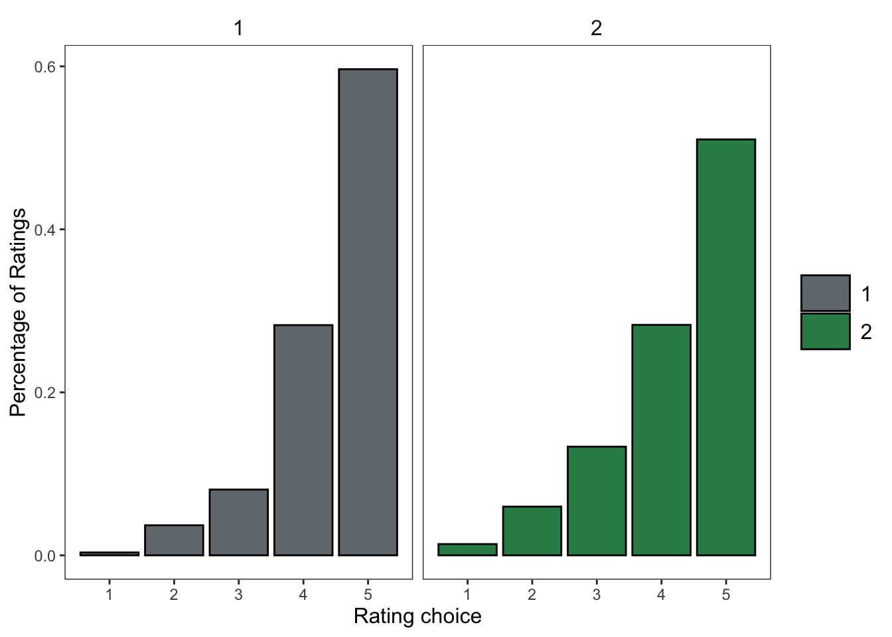

── Conflicts ────────────────────────────────────────── tidyverse_conflicts() ──
✖ dplyr::filter() masks stats::filter()
✖ dplyr::lag() masks stats::lag()
ℹ Use the conflicted package (<http://conflicted.r-lib.org/>) to force all conflicts to become errors
library(jtools)library(sjPlot)
Registered S3 methods overwritten by 'broom':
method from
tidy.glht jtools
tidy.summary.glht jtools
#refugeeswelcome
library(lme4)
Loading required package: Matrix
Attaching package: 'Matrix'
The following objects are masked from 'package:tidyr':
expand, pack, unpack
library(lmerTest)
Attaching package: 'lmerTest'
The following object is masked from 'package:lme4':
lmer
The following object is masked from 'package:stats':
step
td =read.csv(here("data", "ratings_tidy.csv"))
Statistical Analysis
The analysis is broken into sections. The first concerns the most important 5 questions that should be directly affected by the lesson, followed by the remaining directly affected questions, semi-affected questions and ending with the least affected questions. The plots show the percentage of each rating for each question type (instead of total count since groups were unequal).
To analyze the differences between version 1 and version 2, a series of mixed effects binomial logistic regression models were fit. One model was fit to each question type (four total: most important questions, directly affected questions, semi-affected questions and least affected questions). In the models for most important questions, semi-affected questions and least affected questions, the dependent variable was the log-odds of rating a 4 or 5 (versus 1, 2 or 3). For the directly affected questions, the dependent variable was the probability of choosing “yes” compared to (“no”, “maybe” or “no opinion”). The independent variables in all models were version (1 or 2) and current class (1,2,3 or 4) and their interaction. The random effects included random intercepts for both prompt and participant. For all models, main effects and interactions were assessed using nested model comparisons with the anova function in R. Alpha was always .05.
Most important 5 questions:
How much do you like the idea of being/becoming bilingual? like_becoming_bilingual
Even if the other person knows both languages, how rude is it to switch between languages in a conversation? (reverse coded) codeswitch_rude
How important is Spanish in the United States? important_spanish
How valuable is it to be bilingual? valuable
How important is it to not have an accent when speaking a second language? (reverse code) no_accent
pct_df_preq %>%ggplot(aes(y = pct, x = rating, fill =as.factor(version))) +geom_col(color ="black", position ="dodge") +scale_fill_manual(values =c("#71797E", "seagreen")) +facet_wrap(~version) +theme_apa() +xlab("Rating choice") +ylab("Percentage of Ratings")

The percentage of each rating by group for the 5 questions in focus
Generalized linear mixed model fit by maximum likelihood (Laplace
Approximation) [glmerMod]
Family: binomial ( logit )
Formula: rating_recode ~ version + current_class + (1 | prompt) + (1 |
participant_number)
Data: most_int
AIC BIC logLik deviance df.resid
806.7 841.1 -396.3 792.7 998
Scaled residuals:
Min 1Q Median 3Q Max
-4.4577 0.1965 0.2688 0.4114 1.4077
Random effects:
Groups Name Variance Std.Dev.
participant_number (Intercept) 1.2183 1.1038
prompt (Intercept) 0.5108 0.7147
Number of obs: 1005, groups: participant_number, 200; prompt, 5
Fixed effects:
Estimate Std. Error z value Pr(>|z|)
(Intercept) 1.8811 0.4984 3.774 0.00016 ***
version2 -0.8499 0.2689 -3.160 0.00158 **
current_class2 0.7297 0.4663 1.565 0.11764
current_class3 0.8571 0.4042 2.120 0.03398 *
current_class4 0.9061 0.4095 2.213 0.02692 *
---
Signif. codes: 0 '***' 0.001 '**' 0.01 '*' 0.05 '.' 0.1 ' ' 1
Correlation of Fixed Effects:
(Intr) versn2 crrn_2 crrn_3
version2 -0.336
crrnt_clss2 -0.473 -0.018
crrnt_clss3 -0.555 0.039 0.618
crrnt_clss4 -0.543 -0.005 0.617 0.706
Overall: Most imortant questions
The only differences found for the most important 5 questions was between version 1 and 2 -there was a main effect for version (\(\chi\)(1) = 11.77; p < .005), meaning that some of the variation in the data was explained when we consider the what version it came from. There was not evidence of a main effect of current class (\(\chi\)(3) = 5.5; p = 0.14) or the current class and version interaction (\(\chi\)(3) = 1; p = 0.8).
Specifics: Most important questions
The model intercept 1.88 represents the log-odds of choosing a 4 or 5 for version 1 and current_class1. The model predicts that subjects who had version 2 were less likely to ajnswer 4 or 5 (difference in log-odds: -0.85. In probability (calculated by using the plogis function in R), the model predicts a probability of 0.8676111 for version 1 and 0.5681783 for version 2.
The effects for class suggested that, relative to current_class1, class 3 and 4 were more likely all pick 4 or 5, with a difference of 0.86 for current_class3 (p > .05), and 0.91 for current_class4 (p > .05). Current_class2 was not significantly different (p = .12), but was in the correct direction 0.73
The rest of the directly affected questions:
Should all schools in the United States teach children to speak in more than one language? schools_teach
Is learning Spanish worth the effort it takes? effort
Should people learn another language even if they don’t plan on traveling abroad? learn_not_abroad
Is speaking or learning another language important to you because it will help you in your job or future career? future_career
Is speaking or learning another language important to you because it will help you connect with people who speak that language? connect_with_people
Are multilingual people an asset to the United States? multilingualism_asset
Is it acceptable for people to be monolingual in today’s world? (reverse code) acceptable_monolingualism
Do you think you can become bilingual? become_bilingual become_bilingual
pct_df_preq_da %>%ggplot(aes(y = pct, x = rating, fill =as.factor(version))) +geom_col(color ="black", position ="dodge") +scale_fill_manual(values =c("#71797E", "seagreen")) +facet_wrap(~version) +theme_apa() +xlab("Rating choice") +ylab("Percentage of Ratings")
The percentage of each rating by group for the directly affected questions
Generalized linear mixed model fit by maximum likelihood (Laplace
Approximation) [glmerMod]
Family: binomial ( logit )
Formula: rating_recode ~ version + current_class + (1 | prompt) + (1 |
participant_number)
Data: dir_aff
AIC BIC logLik deviance df.resid
1395.9 1433.6 -690.9 1381.9 1601
Scaled residuals:
Min 1Q Median 3Q Max
-4.7716 -0.2258 0.2764 0.3978 10.2939
Random effects:
Groups Name Variance Std.Dev.
participant_number (Intercept) 2.384 1.544
prompt (Intercept) 3.642 1.909
Number of obs: 1608, groups: participant_number, 200; prompt, 8
Fixed effects:
Estimate Std. Error z value Pr(>|z|)
(Intercept) 1.07942 0.78599 1.373 0.170
version2 -0.12308 0.26842 -0.459 0.647
current_class2 0.07872 0.49753 0.158 0.874
current_class3 0.13616 0.42848 0.318 0.751
current_class4 0.46247 0.43996 1.051 0.293
Correlation of Fixed Effects:
(Intr) versn2 crrn_2 crrn_3
version2 -0.177
crrnt_clss2 -0.367 0.019
crrnt_clss3 -0.427 0.082 0.654
crrnt_clss4 -0.420 0.053 0.651 0.743
Overall: Directly Affected Questions
There were not main effect or interactions in this case, and the final model (adding the interactions) did not converge.
There not a main effect for version (\(\chi\)(1) = 0.23; 0.63), meaning that there was not evidence that the predictor version explained the variance in the choice of yes for the directly affected questions.
There was also not a main effect for current class (\(\chi\)(3) = 1.75; p = 0.63), meaning that there also was not evidence that the probability of a yes choice varied by current class (independently of version).
The interaction model did not converage - so the latest convered model is reported (with version and current class as fixed effects).
Specifics: Directly Affected Questions
Since there are no significant effects, we cannot infer that any of the model estimates in this case are reliable. Nonetheless, this is how the terms would be interpreted.
The model intercept 1.08 represents the log-odds of choosing “yes” (coded as 1) for version 1 and current_class 1 (probability = 0.746494). The model predicted that version 2 participants were -0.12 log-odds less likely to answer “yes”, though we do not have compelling evidence this was not due to chance based on the data alone.
The effects for class suggested that, relative to current_class1, all of them were more likely to pick “yes”, with a difference of 0.08 for current_class2, 0.14 for current_class3, and 0.46 for current_class4. Again, though, none of the effects had a p-value under .05, meaning that we only have descriptive evidence of any difference for these specific questions.
Semi-affected questions:
How much smarter does knowing two languages make a person? smarter_two_languages
How much do you wish you started learning Spanish at a younger age? started_younger
How much do you admire people who speak multiple languages? admire_multilinguals
How much do you like learning languages? like_langauges
How much interest do you have in learning a language? interest_languages
How much do you like Spanish? like_spanish
How much do you like hearing Spanish? like_hearing_spanish
How much do you like communicating with Spanish speakers? communicating_spanish_speakers
Do people who speak more than one language have a wider world view than monolinguals? worldview
How boring are Spanish classes? (reverse coded) boring_spanish_class
How fun is studying languages? fun_studying_languages
How interesting is studying languages? interesting_studying_languages
How interesting do you find Spanish-speaking cultures? interesting_spanish_cultures
How beautiful of a language is Spanish? beautiful
pct_df_preq_sa %>%ggplot(aes(y = pct, x = rating, fill =as.factor(version))) +geom_col(color ="black", position ="dodge") +scale_fill_manual(values =c("#71797E", "seagreen")) +facet_wrap(~version) +theme_apa() +xlab("Rating choice") +ylab("Percentage of Ratings")
The percentage of each rating by group for the semi-affected questions
Generalized linear mixed model fit by maximum likelihood (Laplace
Approximation) [glmerMod]
Family: binomial ( logit )
Formula: rating_recode ~ version + current_class + (1 | prompt) + (1 |
participant_number)
Data: semi_eff
AIC BIC logLik deviance df.resid
2729.3 2770.9 -1357.7 2715.3 2807
Scaled residuals:
Min 1Q Median 3Q Max
-6.3064 -0.4617 0.2284 0.5030 12.4489
Random effects:
Groups Name Variance Std.Dev.
participant_number (Intercept) 2.322 1.524
prompt (Intercept) 2.851 1.689
Number of obs: 2814, groups: participant_number, 200; prompt, 14
Fixed effects:
Estimate Std. Error z value Pr(>|z|)
(Intercept) -0.3172 0.5767 -0.550 0.582344
version2 -0.4572 0.2427 -1.884 0.059623 .
current_class2 0.6937 0.4465 1.554 0.120298
current_class3 1.2792 0.3809 3.358 0.000784 ***
current_class4 1.4650 0.3953 3.706 0.000211 ***
---
Signif. codes: 0 '***' 0.001 '**' 0.01 '*' 0.05 '.' 0.1 ' ' 1
Correlation of Fixed Effects:
(Intr) versn2 crrn_2 crrn_3
version2 -0.215
crrnt_clss2 -0.442 0.011
crrnt_clss3 -0.515 0.074 0.646
crrnt_clss4 -0.510 0.044 0.646 0.739
Overall: Semi-affected Questions
In this model, there were main effects for version (\(\chi\)(1) = 4.71; p < .05), and for current class (\(\chi\)(1) = 17.15; p < .005). The interaction model failed once again to converge. This suggests that both the version (1 vs 2) and current class (1,2,3 or 4) are associated with differences in the probability of a choice of a 4 or 5 rating. The lack of an interaction suggests that the differences between versions 1 and 2 did not depend on the current class.
Specifics: Semi-affected Questions
The model intercept -0.32 represents the log-odds of choosing 4 or 5 (coded as 1) for version 1 and current_class 1 (probability = 0.4206757). The model predicted that version 2 participants were less likely to answer 4 or 5 (log odds = -0.46), although the p-value is just barely no longer significant when we consider the current_class predictor (p = .06).
Current class was a stronger predictor for the semi-affected questions, with the same direction as before (later classes were more likely to choose 4 or 5). The effects for class suggested that, relative to current_class1, two of the three classes were more likely to pick “yes”, 1.28 (p < .005) for current_class3, and 1.46 (p < .005) for current_class4. Current_class 2 was the correct direction (0.69, but did not reach significance (p = .12). This suggests, like the previous model, that we cannot conclude for certain that there is a difference between current_class1 and current_class2, but we can make reserved observations and conclusions since the direction of the effect appears to be as predicted.
Least affected questions:
How often are you excited to go to Spanish class? excited_spanish_class
How often do you seek out ways to engage with Spanish outside of Spanish class and homework? outside_engagement
How often is Spanish one of your favorite classes? spanish_favorite_class
How difficult is it to learn Spanish in a language classroom? (reverse coded) difficult_classroom_learning
pct_df_preq_la %>%ggplot(aes(y = pct, x = rating, fill =as.factor(version))) +geom_col(color ="black", position ="dodge") +scale_fill_manual(values =c("#71797E", "seagreen")) +facet_wrap(~version) +theme_apa() +xlab("Rating choice") +ylab("Percentage of Ratings")
The percentage of each rating by group for the least effected questions